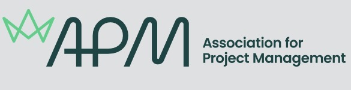
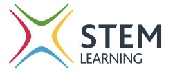
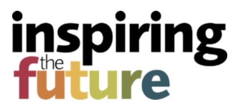
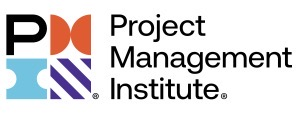

Supporting schools, colleges and professional bodies through mentoring, guest speaking and career coaching.




Volunteering is a core part of how I contribute to the project profession and the wider community. I work with schools, colleges and professional bodies to help students and early‑career professionals understand the opportunities within project management, technology and STEM.
Activities include guest speaking, mentoring, mock interviews, careers fairs and content development for organisations such as the Association for Project Management (APM), STEM Learning, Inspiring the Future and the Project Management Institute (PMI).
*Estimated based on careers fairs, mock interviews and school events across multiple institutions.
A selection of the organisations I support and the roles I undertake within each.
Supporting the development of project professionals through mentoring, speaking on topics such as AI in project management, reviewing learning content and contributing to research and development forums.
Working with Year 11 students on virtual mock interviews, careers guidance and promoting core computing education, skills and career pathways into technology and project roles.
Providing career support, advice and mentoring to students, helping them understand the world of work and the opportunities within IT and project management.
Contributing time and experience to support PMI initiatives and the wider project management community.
Participating in careers fairs, National Interview Week, mock interviews and “World of Work” events for Year 10 and Year 11 students, helping them build confidence and understand professional expectations.
“Honoured to be recognised as a volunteer with Inspiring the Future. Supporting and inspiring the next generation is something I care deeply about, and it’s a privilege to contribute my time and experience to such an impactful initiative. This badge is a reminder of the difference we can make when we show up, share our stories, and help young people see what’s possible. Looking forward to continuing this work and helping shape future talent across the project profession.”
Selected volunteering activities, showing the progression from early employee representation through to structured mentoring and national initiatives.
| Started | Organisation | Role | Cause |
|---|---|---|---|
| 2016‑03 | Computacenter | UK Employee Forum Representative | Employee engagement |
| 2023‑02 | Student Mentor | Mentor | Education |
| 2024‑01 | APMP / APM | Guest Speaker | Science & Technology |
| 2025‑01 | APM | Research Advisory Group, Mentor, Learning Content Reviewer | Education |
| 2025‑01 | Project Management Institute | Volunteer | Education |
| 2026‑01 | STEM Learning | Career Coach, Student Ambassador, Year 11 Virtual Mock Interviews | Education |
| 2026‑01 | Inspiring the Future | Career & mentor volunteer, Silver & Gold volunteer, Student Volunteer | Education |
| 2026‑03 | National Interview Week | Mock Interviews | Education |
Typical activities include mock interviews, careers talks, guest lectures on project management and technology, and mentoring for students considering a career in projects or IT.